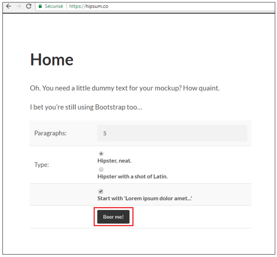

Les bases de Git
Création d'un nouveau projet fresh-project
Ouvrir dans windows un terminal git dans le répertoire de votre choix ex : c :\space
1
git init fresh-project2
ls3
cd fresh-project4
ls5
ls -al
6
cd .git7
ls8
cd ..9
pwd
10
git statusOuvrir https://hipsum.co/ dans un navigateur

Sélectionner et Copier le premier paragraphe par exemple
1
npp hipster.txt # Coller le texte sélectionner puis enregistrer2
git status3
git add hipster.txt4
git status5
git commit -> Ajouter du texte puis enregistrer
6
git status7
cd ..8
pwd
9
ls10
rm -rf fresh-project/
11
Création de projet à partir de source existante
Télécharger un template de projet html/css à partir de http://www.initializr.com/
1
pwd
2
cd c:\space3
unzip c:/space/initializr-verekia-4.0.zip
4
ls5
mv initializr web-project # renommer
6
ls7
cd web-project8
ls9
git init10
ls -al
11
git status12
git add .13
git status14
git commit -m "My first commit, inline"
15
git status16
ls -al
17
rm -rf .git # si on l'enleve alors git ne gére plus les fichiers
18
ls19
git status # error not a git repository
20
cd ..21
ls22
rm -rf web-project
23
rm -rf initializr-verekia-4.0.zip
Création d'un projet à partir de GitHub (Remote )
Pour commencer, faire un fork du projet suitvant https://github.com/Formation67/my-app dans votre espace GitHub
1
pwd
2
cd space3
git clone github-https-url # my value: https://github.com/Formation67/my-app.git
4
ls5
cd my-app6
ls7
ls -al
8
cd .git9
ls10
cd ..11
clear12
git statusGit Workflow
1
cd space2
ls # vide
3
git clone https://github.com/Formation67/my-app.git4
cd my-app5
ls6
git status7
npp hipster.txt # ajouter un paragraphe à partir de https://fr.lipsum.com/8
ls9
git status10
git add hipster.txt11
git status12
git commit # Add message in notepad++
13
git status14
git pull origin master # pour récupérer et fusionner les changements distants
15
clear16
git push origin master17
Tracked Files / Express Commit
Liste tous les fichiers "tracked"
1
cd my-app2
ls3
git status4
npp hipster.txt # Ajouter du texte de https://fr.lipsum.com/5
git commit -am "Adding more ipsum text"
6
git ls-files # all tracked files
7
npp newfile.txt # ajouter du texte de https://fr.lipsum.com/8
git status9
git ls-files # le fichier newfile.txt n'est pas listé
10
git add newfile.txt11
git status12
git ls-files # newfile.txt est listé
Édition de fichier
1
cd my-app2
clear3
ls4
npp hipster.txt # ajouter du texte de https://fr.lipsum.com/5
git status6
git commit -m "Adding new file"
7
git status8
git add hipster.txt9
git status10
git commit -m "More ipsum for hipsters"
11
git statusAjout de fichiers de façon récursive
1
cd my-app2
git status3
mkdir -p level1/level2/level3 # construire une structure de répertoire
4
ls5
cd level16
pwd
7
npp level1-file.txt # ajouter du texte de https://fr.lipsum.com/8
ls9
cd level210
npp level2-file.txt # ajouter du texte de https://fr.lipsum.com/11
ls12
cd level313
npp level3-file.txt # ajouter du texte de https://fr.lipsum.com/14
ls15
clear16
cd ../../..17
ls18
git status19
git add .20
git status21
git commit -m "multi level"
Annuler des actions
1
cd my-app2
ls3
git status4
cd level15
ls6
npp level1-file.txt # ajouter du texte de https://fr.lipsum.com/7
git status8
git add level1-file.txt9
git status10
npp level1-file.txt # ajouter du texte de https://fr.lipsum.com/11
clear12
git status13
git reset HEAD level1-file.txt # pour désindexer un fichier
14
npp level1-file.txt
15
clear16
git status17
git checkout -- level1-file.txt # to discard changes in working directory
18
git status19
npp level1-file.txt
Rename
1
cd my-app2
ls3
cd level1/level2/level34
pwd
5
clear6
ls7
git status8
git mv level3-file.txt level3.txt # renommer à partir de la commande git
9
ls10
git status11
git commit -m "renaming level3 file"
12
cd ..13
clear14
pwd
15
ls16
mv level2-file.txt level2.txt # renommer à partir de l'os
17
ls18
git status19
git add -A
20
git status21
git commit -m "Rename commit"
Deleting Files
1
cd my-app2
ls3
git status4
clear5
npp doomed.txt #ajouter du texte6
ls7
git status # => no traked file
8
git rm doomed.txt # remove no tracked file => error
9
rm doomed.txt # remove from os
10
ls11
git status12
clear13
git ls-files14
ls15
git rm newfile.txt
16
git status17
git commit -m "Deleting new file"
18
git status19
clear20
git status21
git ls-files22
git rm hipster.txt
23
ls24
git status25
git reset HEAD hipster.txt26
git status27
git checkout -- hipster.txt
28
ls29
git status30
clear31
ls32
rm hipster.txt33
ls34
git status35
git add -A
36
git status37
git commit -m "deleting hipeter.txt"
38
git status39
clear40
ls41
rm -rf level1
42
ls43
git status44
git add -A
45
git status46
git commit -m "deleting level1 and all children"
47
git statusHistory
1
git help log2
cd my-app3
git status4
clear5
git log6
git log --abbrev-commit
7
git log --oneline --graph --decorate
8
git log ae6f872...761b9119
git log --since="3 days ago"
10
clear11
ls12
git log -- hipster.txt
13
clear14
git show 1119877eb26ab06c336303008f6148873dd2c4bb15
clearGit Alias
1
cd my-app2
ls3
git status4
clear5
git log --all --graph --decorate --oneline
6
git hist7
git config --global alias.hist "log --all --graph --decorate --oneline"
8
git hist9
clear10
npp ~/.gitconfig # verificationEXCLURE DU SUIVI DE VERSION
1
cd my-app2
ls3
git status4
ls -al
5
npp .gitignore
6
ls -al
7
git status8
git add .gitignore9
git status10
git commit11
git status12
ls13
npp access.log #ajouter du texte14
ls15
git status16
npp .gitignore # ajouter fichier à exclure17
clear18
git status19
mkdir log20
mv access.log log21
ls22
cd log23
ll
24
cp access.log access.2014-11-0425
ll
26
cd ..27
git status28
npp .gitignore # exclure le répertore i.e log/29
git status30
git commit -am "Excluding log file directory"
31
git statusGit Basics Cleanup
1
cd my-app2
ls3
git status4
clear5
git pull origin master6
git push origin master